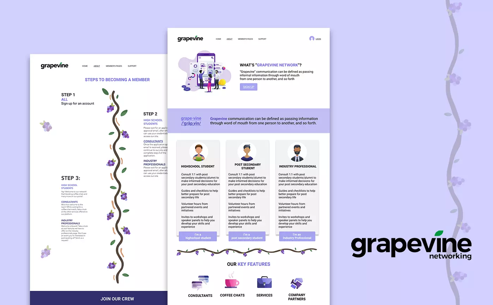

Designing a Networking Platform
Grapevine Networking
Role
Digital media and content manager
Duration
March 2020- August 2020
Tools
Figma, Photoshop, Illustrator, Wix
Project type
UX design, Web design, Graphic design
Brief
Grapevine Networking is a passion project that I chose to be a part of because the objective of the organization was something I strongly believed in. Grapevine Networking was created to help bridge the gap between high school students, post secondary students and industry members. Being a post-secondary student myself that has gone through the process of choosing an industry path, I would've loved to have a platform that guided me to achieving my future goals through building meaningful connections. Although it is a platform targeted towards high school students, post-secondary students and industry members still have the benefit of networking and being a mentor.
My Role
My role on the team was digital media and content manager. I was responsible for generating an overall cohesive layout and colour scheme and design responsive web layouts and graphics to be implemented on the site. Additionally, I oversaw all pages and made design improvements where I saw fit. I worked closely with the directors and design team.
The Problem
Highschool students especially in the upper years are more proactive in their search to find out more information about what university program they want to pick, university life, and career advice. The current options for them to do so is through broad networking platforms such as LinkedIn and messaging through social media. The problem with this is that highschoolers can be intimidated by the idea of networking with the lack of experience and without knowing if the recipient they reach out to will reply
Through interviewing high-school students and reaching out to our network, we also found that most students are either:
- Unsure about their future goals or
- Know what they want to achieve but are looking for the guidance to get there
Through our brainstorm and research, I came up with a problem statement to define the problem we are trying to solve which is:
Target User
From our research, I designed a persona profile to highlight the pain points and wants and needs of our target user.
Design Process
User flow chart
In designing the platform, I started by creating a user flow chart with the important features to include on each page. This helped for the future stage of distributing the pages to design among the design team.
Design guide and wireframingTo create an overall cohesive design I drafted up a design guide and some wireframes to decide on the layout of the pages that were going to be included on the platform. Creating layouts of the wireframes helped in visualizing the hierarchy of the user flow.
Hi-fidelity mockup
Using the wireframes as a guide, I created hi-fidelity mockups and a sample colour scheme to present to the directors and the rest of the team. Taking in feedback we made two iterations before I prototyped it. Once our team was all on board, we began integrating the design mockup onto Wix.
Prototype
Designing Graphics
To add onto the design, I created some additional graphics that would be incorporated throughout the platform to bring more consistency towards cohesive design as the pages were done by multiple members on the design team.
Building and Launching the Final Site
The site was launched April 10th, 2020 and we are in the process of promoting and spreading awareness of the platform to high school students, post secondary students and industry professionals.
Check out the running site here
Social Media and Marketing
Following the release of the site, we have continued to promote the platform through releasing social media posts. My team and I, worked on creating these social media posts across platforms. Below are some of the designs I made and you can check the rest on our instagram.

Takeaways
I am truly grateful for this experience because I was able to have a lot of creative control over this project and be able to produce a meaningful product to give back to the community. Being made the digital media and content manager, I developed leadership and collaboration skills in being in charge of the design team. One thing that we found challenging was the responsiveness of the platform. Because the platform was created on Wix, there was limited ability to adjust the responsiveness in some areas on mobile. If I had the chance to make changes, I would probably look into improving the responsiveness as well as user flow after signing up based on the feedback received by some of the high-school students using the platform.
Team membersAiden Wong, Suvaena Laventhiran, Adam Huang, Fahmidah Tanveer, Lesley Lai, Gina Jiang, Emily Nguyen, Christie Man, Julian Poon, Max Wong